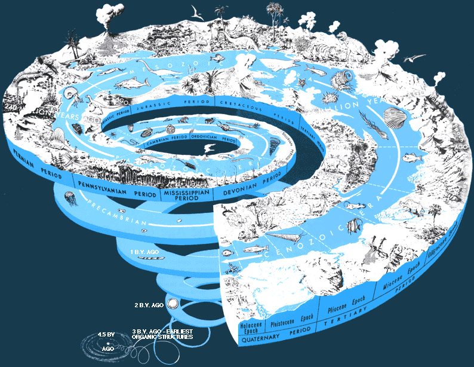

Learning Objectives | Terms | Review Questions | Links | References
Ask a child what interests them about biology and you will not find (in most cases anyway) a child interested in DNA and molecular biology, but rather a child wanting to know about dinosaurs, wooly mammoths, and creatures more at home in J.R.R. Tolkien's The Lord of the Rings than seen walking about the modern world. We retain this thirst for the creatures of the past, as evidenced by the mass popularity of the Jurassic Park books and movies, popular books by a number of paleobiologists, and numerous television programs, such as Walking With Dinosaurs. Some of us have managed to keep this intereswt and enthusiasm for the life of the past. We are paleobiologists, a term that literally means "old studiers of life", although I prefer "study of ancient life" as I myself become more ancient!
Fossils are any evidence of past life. This is a very broad definition that includes the standard shells, bones, petrified wood, and leaves. However, there are many more things that can become fossils: footprints, pollen, feeding traces, worm burrows, even fossilzed feces. Scientists have begun to study fossil DNA mand other biochemicals. Fossils can range from miniscule bacteria to behemoth dinosaurs that would shake the ground as they walked. Aside from the beauty of their patterns and textures, fossils tell us about what the life of the past looked like, and in some cases, how it lived and behaved.
The ancient Greeks thought fossils were the remains of once-living creatures. During the Middle Ages fossils were viewed as artifacts the Devil put there to tempt people's faith. The seventeenth century work of Leonardo Da Vinci and Nicholas Steno (among others) finally led to the widespread recognition of fossils as the remains of creatures, many of which had no living similar forms.
We divide fossils into body fossils and trace fossils (also known as ichnofossils). A body fossil is a part of (or in some cases the entire) body of the creature. In some rare cases the organic material of the creature remains in the fossil, but more often we get casts and molds that reveal the external and internal structure of the organism, but not original material. Trace fossils do not reveal much information about the anatomy of the creatures that made them, but instead offer glimpses of the activity and physiology of the creature.
Example of a trace fossil: Trails: Climactichnites, 505 million years old, Late Cambrian, New York. Image from http://www.dc.peachnet.edu/~pgore/geology/geo102/cambrian.htm#camb, from Dr. Pamela Gore's page.
There are several types of body fossils that differ in the mode of preservation of the original material of the organism. Compressions form when the overlying sediment "compresses" the organism into a flat layer. This results in some of the original organic material of the vreature being preserved., often as thin carbonaceous films. However, many times the organic amterial is further decayed, leaving only a "part and counterpart" detailing the external form of the creature. Casts and molds are a type of preservation where the original material decays, leaving a mold in surrounding rock that can be filled with another sediment (cast). Casts can be external or internal, the latter being known as steinkerns. Petrifaction is the literal "turning to stone" by replacement of organic matter with silica. Petrified wood forms by this process.
Formation of a cast and mold. Image from http://bioweb.cs.earlham.edu/9-12/evolution/index.html.
Time sets geology (and in many ways biology) apart from other sciences. While particle physicists discuss the decay of subatomic particles in miniscule fractions of a second, paleobiologists are discussing spans of time longer than recorded human history. Two types of geologic timeare relative time and absolute time. Relative time ioncvolves the placing of events into a sequence based on their relative positions in the geologic (or rock) record. Absolute time is the placing of a specific number of years (plus or minus a certain amount based on the accuracy od the equipment used in this analysis) on an event or rock sample. This ability was not developed until the early part of the 20th century. Most of the building of ourt framework of geologic time sprang from the application of relative dating techniques.
Archbishop James Ussher of Ireland, in the late 1600's, calculated the age of the earth based on the geneologies from Adam and Eve listed in the biblical book of Genesis. According to Ussher's calculations, the Earth formed on October 22, 4004 B.C. These calculations were part of Ussher's book, History of the World. The chronology he developed was taken as factual, and was even printed in the front pages of bibles. Ussher's ideas were readily accepted, in part because they posed no threat to the social order of the times; comfortable ideas that would not upset the linked applecarts of church and state.
Archbishop James Ussher. Image from the Internet.
Often new ideas must "come out of left field", appearing as wild notions, but in many cases prompting investigation which may later reveal the "truth". Ussher's ideas were comfortable, the Bible was viewed as correct, therefore the Earth must be only 5000 years old.
Geologists had for some time doubted the "truth" of a 5,000 year old earth. Leonardo da Vinci (1452-1519; painter of the Last Supper, and the Mona Lisa, architect and engineer) calculated the sedimentation rates in the Po River of Italy. Da Vinci concluded it took 200,000 years to form some nearby rock deposits.
Left: Leonardo da Vinci. Image from http://museum.brandx.net/p17.jpg. Middle: James Hutton. Image from http://www.ucmp.berkeley.edu/history/hutton.html; Right, Nicholas Steno. Image from http://www.turnpike.net/~mscott/stensen.htm.
Niels Stensen (1638-1686), more widely known by his Latinized name of Nicholas Steno, made a series of observations about the nature of fossils and the rocks that contained them. Steno, along with his contemporaries John Ray and Robert Hooke, recognized "tongue stones" as the teeth from ancient sharks. Steno's Principle of Superposition states that in undisturbed strata the layer on the bottom is oldest. This is one of the founding principles of modern geology. Another of Steno's observations was that sedimentary particles tended to settle out of water as thin sheets or horizontal layers. Steno noted that sediment layers extended laterally in all direction until they thinned, pinched out or met the edge of the depositional basin.
James Hutton 1726-1797, a Scottish physician, intellectual, and farmer, is regarded as the father of modern geology. His investigations led to his development of the Theory of Uniformitarianism, the basis of modern geology and paleontology. According to Hutton's work, certain geological processes operated in the past in much the same fashion as they do today, with minor exceptions of rates, etc. Thus many geological structures and processes cannot be explained if the earth is only 5000 years old.
British geologist William Smith (1769-1839) recognized different strata (layers) had their own unique collections of fossils. He concluded that fossil assemblages succeed one another through time. This led to the process of correlation of rock strata, as well as evolution (change in life over time).
The 18th century French scientist Georges Louis de Buffon cooled iron balls he thought simulated the Earth, arriving at an age of at least 75,000 years. This date was well beyond Ussher's calculations!
Georges Louis Leclerc Comte de Buffon. Image from http://www-groups.dcs.st-and.ac.uk/~history/PictDisplay/Buffon.html.
In 1897, the prominent British physicist Lord Kelvin (given name William Thompson), attempted to experimentally determine the age of the Earth. Kelvin assumed that the Earth was originally molten and calculated a date of its formation based on cooling through conduction and radiation. He calculated the age of Earth as about 24-40 million years. This was wrong since his cooling experiment did not account for the internal heat generated by radioactive decay, unknown iwhen he did his calculations.
Left: Antoine Henri Becquerel. Image from http://www.nobel.se/physics/laureates/1903/becquerel-bio.html. Right: Ernest Rutherford. Image from http://www.nobel.se/chemistry/laureates/1908/rutherford-bio.html.
French physicist Antoine Henri Becquerel (1852-1908) discovered radioactivity in 1896. He shared the 1903 Nobel Prize in Physics for this work, along with Pierre and Marie Curie. Later recognition of isotopic decay sequences is now used as a way to place numerical dates on rock samples. New Zealand physicist Ernest Rutherford (1871-1937), in 1903, suggested the use of radioactivity to determine the age of a rock. Rutherford also worked out the concept of half-life.
Radioactive decay is the process where unstable nuclei are spontaneously transformed into another element. A half-life is the amount of time needed for one-half of a radioisotope to decay into its stable end (or daughter) product. By measuring the various isotopes in a sample, geologists can calculate the age of the specimen. Long-lived radioactive isotope pairs have half-lives in millions or billions of years. The U-Pb series isotopes are used to date ancient igneous intrusive rocks such as granite. Likewise, Rb-Sr isotope ratios can be applied to ancient rocks and meteorites. Fine-grained volcanic rocks, such as bentonite and basalt, are dated by the ratios of K-Ar.
There are several types of radioactive decay that are used in geology. Alpha radiation (sometimes known as an alpha particle) releases two protons and two neutrons (the alpha particle). This large, slow-moving particle is similar to the nucleus of a helium atom. Beta decay releases a fast-moving electron from a neutron in the nucleus. Electron capture occurs when a proton has captured an electron and becomes a neutron.
The U-238 decay series illustrates the complexity of this concept. U-238 emits an alpha particle, becoming changed to thorium-234, which in turn emits a beta particle. The thorium is changed into protactinium-234, which later emits a beta particle, causing it to become uranium-234. Emission of an alpha particle from the U-234 forms thorium-230, which later on emits an alpha particle to become radium-226, which in turn emits an alpha particle to form radon-222, a gas. Radon-222 emits an alpha particle and becomes polonium-218, wich become lead-214 with the later emission of an alpha particle. Lead-214 emits a beta particle, becomming bismuth-214, which later on emits a beta particle to form polonium-214. The emission of an alpha particle converts polonium-214 into lead-210, this later emits a beta particle and becomes bismuth-210, which in its turn emits a beta particle to form polonium-210. The process stops when an alpha is emitted to form lead-206, which is stable. Whew! If we start with one pound of U-238, one half of the material will convert tp lead-206 in a mere 4.5 billion years!
The isotope pairs mentioned above allow us to date only the rock surrounding the fossil., not the fossil itself. Carbon-14 dating, developed by 1960 Nobel laureate Willard Frank Libby (1908-1980), is based on the ratio of C-14 to C-12 in an organic sample. This technique allows us to date the fossil itself. However, the technique is valid only for samples less than 70,000 years old. Living things take in both isotopes of carbon (carbon-12 and carbon-14). Carbon-14 is radioactive, and decays into nitrogen-14. As long as the organism was alive, the ratio of carbon-12 to carbon-14 was in equilibrium with its environment. When the organism dies, the "clock" starts as the carbon-14 decays, changing the ratio. The longer the time since death, the more the isotopic ratio will have changed. .
Some common isotope pairs and their half-lives. Image from http://pubs.usgs.gov/gip/fossils/numeric.html.
There are some sources for uncertainty with radiometric dates. The addition or subtraction of radioactive or daughter material after the formation of the sample may effect the date. Metamorphism and recrystallization may also effect the date accuracy.
Radiometric age assignments based on the rates of decay of radioactive isotopes, not discovered until the late 19th century, suggest the earth is over 4.5 billion years old. The Earth is thought older than 4.5 billion years, with the oldest known rocks being 3.96 billion years old. Geologic time divides into eons, eroas, and smaller units. An overview of geologic time may be obtained at http://www.ucmp.berkeley.edu/help/timeform.html.
The modern geologic time scale is a hybrid with a relative sequence of units measured against a framework of radiometric (absolute) dates. The time scale was first assembled using fossils and relative dating techniques decades before the development of radiometric dating techniques.
The longest duration units of the time scale are the eons. Each eon is subdivided into eras, which are in turn split into periods. Geologists use even smaller time units known as epochs, most commonly in the more recent parts of geologic time. Most geologists recognize three eons: the Archean, the Proterozoic, and the Phanerozoic.
The Archean Eon encompasses the time from the formation of the earth until 2.5 billion years ago. The rocks formed during this eon are the most ancient rocks known, up to 3.96 billion years old. The nature of this rock inducates that there were/are even older rocks that, if they still exist, have yet to be located and dated. Perhaps the biggest development during the Archean was the first appearance of life. The earliest forms of life were simple prokaryotic cells, in a few cases remarkably similar to living prokaryotic forms (at least in terms of observable cell structure and size). Fossil evidence supports the origins of life on earth earlier than 3.5 billion years ago. Specimens from the North Pole region of Western Australia are of such diversity and apparent complexity that even more primitive cells must have existed earlier. Rocks of the Ishua Super Group in Greenland yield possibly the fossil remains of the earliest cells, 3.8 billion years old. Life appears to have begun soon after the cooling of the Earth and formation of its atmosphere and oceans.
These ancient fossils occur in marine rocks, such as limestones and sandstones, that formed in ancient oceans. The organisms living today that are most similar to ancient life forms are the archaebacteria (the archaea in modern usage). This group is today restricted to marginal environments. Recent discoveries of bacteria at mid-ocean ridges add yet another possible origin for life: at these mid-ocean ridges where heat and molten rock rise to the earth's surface.
Many of the ancient phototrophs and heterotrophic bacteria lived in colonial associations known as stromatolites. Cyanobacteria are on the outer surface, with other photosynjthetic bacteria (anoxic) below them. Below these phottrophs are layers of heterotrophic bacteria. The layers in the stromatolites are alternating biogenic and sedimentologic in origin.

Image of Sharks Bay, Australia stromatolites, a cross section of one of these structures, and a closeup of the cyanobacteria that make up the bulk of the feature. Image from http://www.dme.wa.gov.au/ancientfossils/sharkbay2.jpg.
The Proterozoic Eon covers the time span from 2.5 billion to 544 million years ago. Simple, prokaryotic cells still dominated the world's environments until the evolution of simple eukaryotes approximately 1.5-1.2 billion years ago. With the appearance of eukaryotes comes the development of sexual reproduction, which greatly increased the variation that natural selection could operate on. A major enbvironmental change, initiated by living things, was the development of oxygenic photosynthesis. This led to increasing oxygen levels during later Proterozoic. Geologists refer to the "great iron crisis" when the rising levels of oxygen in the world's oceans caused the formation or iron oxide (Fe2O3), often preserved as the banded iron formation (an important commercial source of iron).
Banded iron formation, illustrating the alternating layers of magnetite and hematite (the red iron) and chert. Image from http://www.agso.gov.au/education/factsheet/ironform.html.
The Phanerozoic Eon represents the past 544 million years of geologic time. The term "phanerozoic" literally translates as "time of visible life". During this eon animals, which had evolved during the late precambrian, developed hard parts that led to an increase in animal fossils. Major events of the Phanerozoic Eon include the evolution of plants and vertebrate animals. The Phanerozoic Eon can be subdivided into three eras: Paleozoic, Mesozoic, and Cenozioc.

One way to represent geological time. Note the break during the precambrian. If the vertical scale was truly to scale the precambrian would account for 7/8 of the graphic. This image is from http://www.clearlight.com/~mhieb/WVFossils/GeolTimeScale.html.

A common representation of geologic time is as a spiral. This image is from http://pubs.usgs.gov/gip/geotime/time.html.
Hutton, James. 1798. THEORY of the EARTH; or an INVESTIGATION of the Laws observable in the Composition, Dissolution, and Restoration of Land upon the Globe. Online version at http://www.mala.bc.ca/~johnstoi/essays/Hutton.htm.
Rutherford, Ernest. 1900 . A Radioactive Substance emitted from Thorium Compounds. Philosophical Magazine for January 1900, ser. 5, xlix, pp. 1-14. Online version at http://dbhs.wvusd.k12.ca.us/Chem-History/Rutherford-half-life.html.
Email: mj.farabee@emcmail.maricopa.edu
Last modified:
The URL of this page is:
{kind=link}
{kind=link}